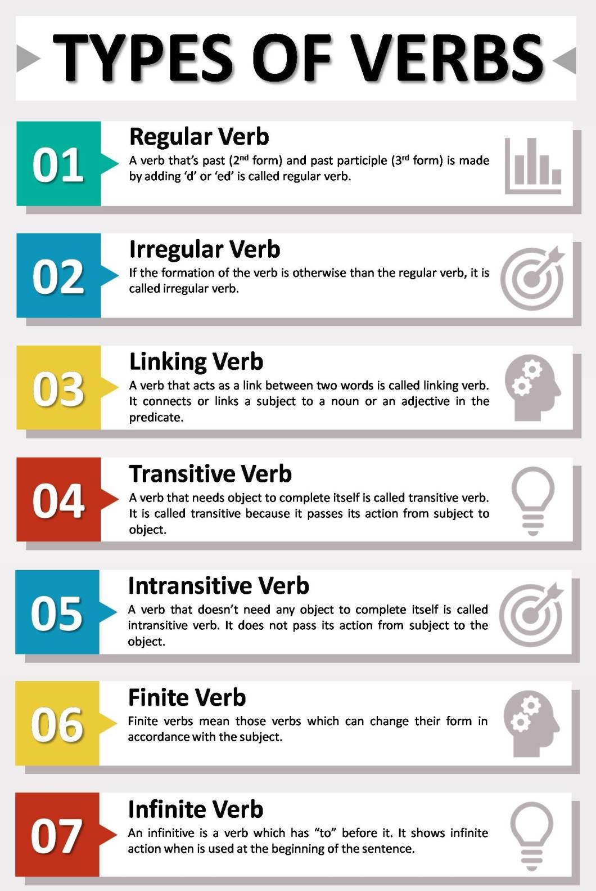

What is a verb?
A verb is a word or a combination of words that indicates action or a state of being or condition. A verb is the part of a sentence that tells us what the subject performs. Verbs are the hearts of English sentences.

TYPES OF VERBS
- FINITE VERBS:
- Finite verbs are the actual verbs which are called the roots of sentences. It is a form of a verb that is performed by or refers to a subject and uses one of the twelve forms of tense and changes according to the number/person of the subject.Examples:-
- Robert
plays
hockey.
-
He
is
one of the best players.
- NON-FINITE VERBS:
- Non-finite Verbs are not actual verbs. They do not work as verbs in the sentence rather they work as nouns, adjectives, adverbs, etc. Non-finite verbs do not change according to the number/person of the subject because these verbs, also called verbals, do not have any direct relation to the subject. Sometimes they become the subject themselves. Examples:-
- Alex went abroad
to play (Infinitives)
-
Walkingis a good habit.
- ACTION VERBS:
- Action verbs indicate what the subject of a sentence performs. Action verbs can make the listener/reader feel emotions, see scenes more vividly and accurately.
Action verbs can be transitive or intransitive. Examples:-
- She is reading the newspaper(TRANSITIVE)
- I wake up at 6 AM.
- LINKING VERB:
- A linking verb adds details about the subject of a sentence. In its simplest form, it connects the subject and the complement — that is, the words that follow the linking verb. It creates a link between them instead of showing action. Examples:-
- She appears ready for the game.
- The food seemed delicious.
- AUXILIARY VERB:
- Auxiliary verbs are also called helping verbs. An auxiliary verb extends the main verb by helping to show time, tense, and possibility. The auxiliary verbs are – be verbs, have, and do. Examples:-
- Alex is going to school.
- They are walking in the park.
- MODAL VERB:
- A modal verb is a kind of an auxiliary verb. It assists the main verb to indicate possibility, potentiality, ability, permission, expectation, and obligation.
The modal verbs are can, could, must, may, might, ought to, shall, should, will, would. Examples:-
- Imaywant to talk to you again.
- They must play their best game to win.